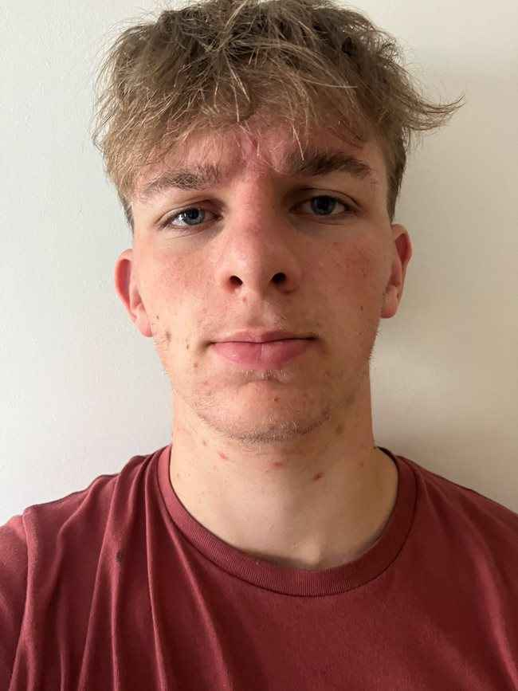

Daniel Onstwedder Portfolio
Computer Science Student

Summary
Motivated and detail oriented Computer Science student with over 3 years experience in Java, SQL, HTML, CSS and JavaScript. Experience developing e-commerce websites, business management systems and relational databases. Looking to use my skills in web development, software development and cybersecurity.
Education
Computer Science BSc with one year professional experience
Queen's University Belfast
1st Honours (Currently)
2023-2027
A Levels
Mathematics, Computer Science, Music, Physics (AS)
Bangor Grammar School , Northern Ireland
2021-2023
GCSE's (Including Maths and English)
Further Mathematics, Computer Science, Music, German, Physics, Chemistry, Geography,
Bangor Grammar School , Northern Ireland
2019-2021
Work Experience
N/A - Still Studying
Skills
- Programming: Proficient in Java, Python, HTML, CSS, JavaScript, SQL
- Microsoft Word: Preparing in depth group studies for church youth organisation
- Creativity: Experienced in Music, using creative skills to create songs, melodies, improvisation
- Web Development: Experience designing and managing websites specific to client requests
- Teamwork: Able to work efficiently in a team as well as lead a team. Focus on communication, delegation and combining ideas
- Leadership: Experience leading a group/ team in order to meet a shared goal through communication, delegating responsibilites and accountability with other team members
Achievements
-
The Complete 2024 Web Development Bootcamp
Udemy
In Progress
-
Java 17 Masterclass
Udemy
In Progress
-
Python Masterclass 2024
Udemy
In Progress
-
Grade 1-6 Clarinet
2012 - Present
-
Grade 5 Alto Saxophone
2019
Contact Me
About Me